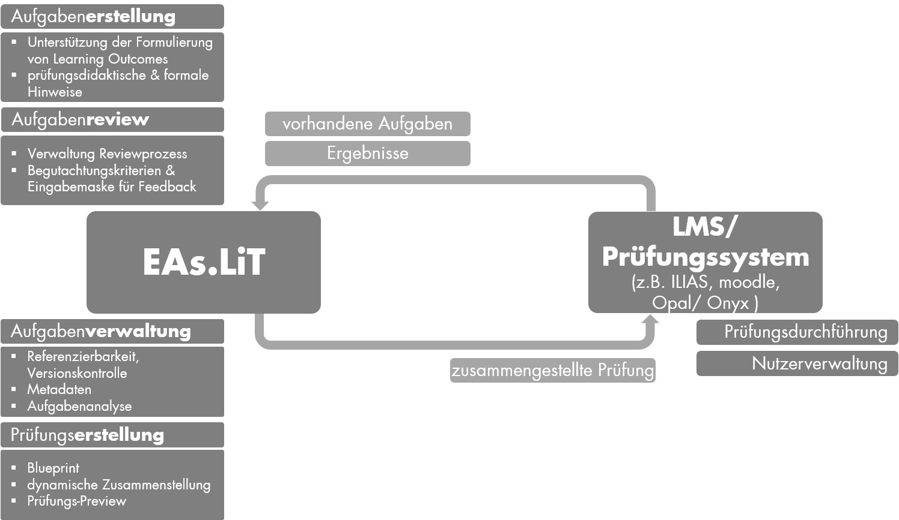
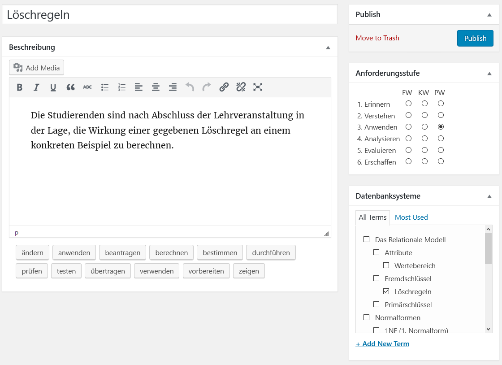
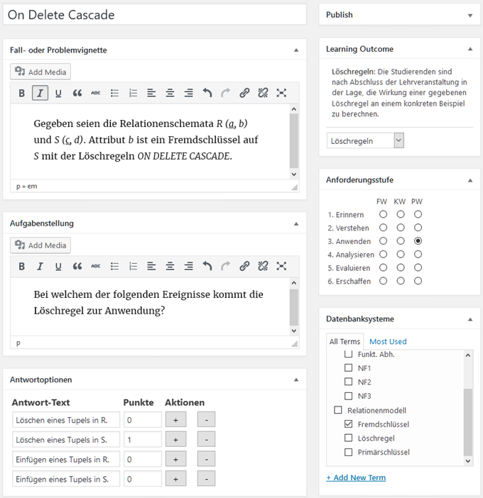
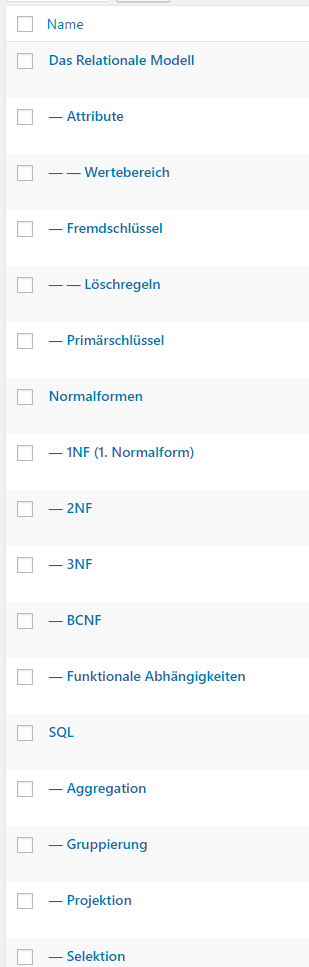
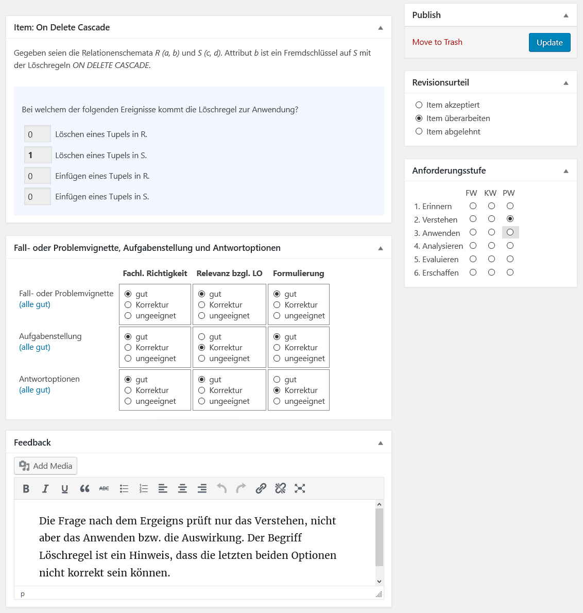

Inhalt
Weiterführende Informationen
Das E-Assessment-Literacy-Tool (EAs.LiT) ist ein
Web-basiertes System zur kollaborativen, qualitätsgesicherten
Erstellung von Aufgaben (Items) für E-Assessments unter Berücksichtigung des
Constructive Alignment. EAs.LiT unterstützt dazu hochschuldidaktisch
fundiert bei der Formulierung von Learning Outcomes, der darauf
basierenden Erstellung und Begutachtung von Aufgaben sowie der
kriterienbasierten semi-automatischen Zusammenstellung
gleichwertiger E-Prüfungen. Der Begutachtungsprozess ermöglicht die
Erstellung strukturierter Reviews zur Sicherung der Item-Qualität
hinsichtlich fachlicher Richtigkeit, Relevanz und Formulierung. Des
Weiteren unterstützt EAs.LiT die Erstellung von Item-Pools für
Prüfungen durch eine interaktive, mehrdimensionale Datenexploration
innerhalb des Item-Bestands basierend auf Strukturplänen für
Prüfungen (Blueprints).
Prozess der Itemerstellung
Nachfolgende Abbildung illustriert den schematischen Workflow
zur Item-Erstellung mit EAs.LiT. Dieser strukturiert den Prozess der
Prüfungsentwicklung durch konkrete Arbeitsschritte. Der gesamte
Prozess wird während der Bearbeitung versioniert, sodass jederzeit
Änderungen nachvollzogen und rückgängig gemacht werden können.
Erstellte Items lassen sich als Item-Pool für verschiedene
Lern-Management-Systeme (LMS) exportieren und dort für Prüfungen
verwenden; bereits in einem LMS vorhandene Items können importiert
und in EAs.LiT weiterverarbeitet werden.

Learning Outcome
Die Erstellung von
Items erfordert zunächst die
Definition von Learning Outcomes (LO), d.h. was Lernende wissen,
verstehen und in der Lage sind zu tun, nachdem sie einen Lernprozess
abgeschlossen haben. Die nachfolgende Abbildung zeigt den
Screenshot eines LO aus dem Bereich relationaler Datenbanksysteme
zur Funktionalität von Löschregeln bei der Definition von
Fremdschlüsseln.

LO sind konkrete und messbare Kompetenzen, welche sich auf
einen konkreten Inhalt beziehen, thematisch kategorisiert werden und
jeweils einer Anforderungsstufe bzgl. der Lernzieltaxonomie nach
Anderson und Krathwohl zugeordnet sind. EAs.LiT unterstützt die
Formulierung von LO durch Textbausteine, z.B. für Einleitungssätze
("Die Studierenden sind nach Abschluss der Lehrveranstaltung in der
Lage, ...") sowie dem Bereitstellen von zur Anforderungsstufe
passender Superverben (z.B. berechnen, prüfen oder übertragen für
die Anforderungsstufe Anwenden), die durch einen Klick auf den
entsprechenden Button in die Beschreibung an der aktuellen
Cursor-Position eingefügt werden. Zusätzlich zur Anforderungsstufe
erlaubt EAs.LiT die Charakterisierung der Wissensdimension (Fakten-,
Konzept- oder Prozesswissen), welche vom LO adressiert wird. Das in
der obigen Abbildung dargestellte LO wurde auf der Anforderungsstufe
Anwenden im Bereich Prozesswissen eingeordnet.
Ein LO hat einen Titel sowie eine Beschreibung und ist einer
Anforderungsstufe zugeordnet. Einem LO können ein oder mehrere Terme
aus der
Taxonomie zugeordnet sein. LOs haben
keinen Status. Jeder Nutzer kann alle Learning Outcomes sehen,
ändern und löschen.
Die tabellarische Darstellung aller LOs ist
erreichbar unter Menu > Metadata > Learn. Outcomes.
Item
Zur Erstellung eines Items wählt der Nutzer vorzusgweise ein LO sowie einen
Item-Typ aus. (Die Erstellung eines Items ohne LO ist möglich.)
Der derzeitige EAs.LiT-Prototyp unterstützt die Item-Typen "Single
Choice" und "Multiple Choice""; weitere Item-Typen werden perspektivisch
ergänzt. Die nachfolgende Abbildung zeigt den Screenshot eines Single-Choice-Items,
welches dem oben dargestellten LO zugeordnet wurde.

Ein Item hat einen Titel, eine Fall-/Problemvignette sowie eine Aufgabenstellung.
Die Trennung des Fragebereichs in Fall-/Problemvignette und
Aufgabenstellung erleichtert die Wiederverwendbarkeit in großen
Item-Pools. So kann die in Bild gezeigte Vignette auch für andere
Aufgabenstellungen genutzt werden, um z.B. die Eigenschaften
gültiger Attributwerte des Attributs
b zu charakterisieren.
Je nach Type des Items (Single Choice, Multiple Choice) gibt es mehrere Antwortoptionen mit zugehörigen Punktzahlen.
Ein Item kann (und sollte) einem Learning Outcome zugeordnet sein.
Zusätzlich wird jedes Item einer
Anforderungsstufe (Erinnern, Verstehen, Anwenden, Analysieren,
Evaluieren oder Erschaffen) auf einer der drei Wissensdimensionen
(Fakten-, Konzept- und Prozesswissen) zugeordnet.
Abschließend wird jede Frage mit Hilfe der
Taxonomie thematisch klassifiziert.
Als Default-Wert
werden beim Erstellen eines Items die Zuordnungen des zugehörigen LO
verwendet; die Item-Zuordnungen können aber von den Learning-Outcome-Zuordnungen abweichen.
Die tabellarische Darstellung aller Items ist
erreichbar unter "Menu > Items > All Items". Über "Menu >
Items > Single Choice" bzw. "Menu > Items > Multiple
Choice" kann die Liste aller Items pro Typ aufgerufen werden.
Item-Status: Jedes Item hat einen von drei möglichen Stati (der sich im Verlauf des Prozesses der Item-Erstellung ändert):
- Draft: Während des Entwurfs eines Items; noch nicht für
den Begutachtungsprozess vorgesehen
- Pending: Item ist in der Begutachtungsphase
- Published: Item ist durch Editor publiziert worden
Auf Basis des Item-Status sowie der Nutzerrolle (Autor oder
Editor) gelten folgende Rechte:
| Nutzer ... |
kann ansehen |
kann editieren |
kann Status ändern zu |
| Autor/Ersteller des Items |
ja |
ja (solange Status nicht Published)
|
Draft oder Pending |
| Rolle "Autor" |
ja (solange Status nicht Draft)
|
nein |
-- |
| Rolle "Editor" |
ja |
ja |
Draft, Pending oder Published |
Taxonomien
Eine Taxanomie ist eine Hierarchie von Fachbegriffen
(hierarchische angeordnete Schlagworte) zu einem Thema. Jedes Item
sowie die zugeordneten Learning Outcomes und Review gehören zu genau
einer Taxonomy. Nachfolgende Abbildung zeigt einen Ausschnitt aus
einer Datenbank-Taxonomy.

Neben der Zuordnung von Items und Learning Outcome zu Termen einer
Taxonomy bildet eine Taxonomy die Grundlage einer (virtuellen)
Arbeitsgruppe mit mehreren Nutzern. Nutzer können dabei mehreren
Arbeitsguppen (d.h. mehr als einer Taxonomy) zugeordnet sein (und
dort auch unterschiedliche Rollen einnehmen). Während der Arbeit
wird immer eine aktuelle Taxonomy verwendet, d.h.
Nutzer arbeiten grundsätzlich nur mit Items / Reviews / Learning
Outcomes der aktuellen Taxonomy. Die aktuelle Taxonomy kann der
Nutzer jederzeit umstellen (aus der Liste der ihm zugeordneten
Taxonomys). Innerhalb einer Taxonomy gibt es zwei Rollen, die ein
Nutzer einnehmen kann:
- Author: "normaler" Nutzer, der Items erstellen, eigene
Items bearbeiten/löschen und andere Items begutachten kann
- Editor: "privilegierter" Nutzer, der alle Items bearbeiten
und "publizieren" kann
Review
Der Item-Erstellungsprozess wird durch ein zweistufiges
Peer-Review-Verfahren begleitet, um die Qualität der Items und damit
des gesamten E-Assessments zu gewährleisten. Ähnlich dem
Peer-Review-Verfahren bei wissenschaftlichen Zeitschriften geben die
Lehrenden die von ihnen erstellten Items in den
Begutachtungsprozess. Andere Nutzer (Peers) erstellen daraufhin ein
strukturiertes, kriterienbasiertes Gutachten. Auf Basis der Reviews
entscheidet ein Editor, ob das Item akzeptiert ist oder überarbeitet
werden soll. Die nachfolgende Abbildung zeigt ein beispielhaftes Review für das
oben dargestellte Item.

Wesentlicher Bestandteil ist die Einschätzung
der Item-Bestandteile Vignette, Aufgabe und Antwortoptionen bzgl.
fachlicher Richtigkeit, Relevanz für das LO sowie Formulierung. Die
Bewertung erfolgt dabei jeweils auf einer diskreten Skala (gut /
Korrektur / ungeeignet). Analog wird für das gesamte Item ein
Revisionsurteil (akzeptiert / überarbeiten / abge-lehnt) vergeben.
Zusätzlich fordert EAs.LiT ein konkretes Feedback zu den Kriterien,
welche nicht als gut bewertet wurden. Im Beispiel der Abbildung3
moniert der Gutachter u.a., dass die Anforderungsstufe niedriger ist
als vom Item-Autor angegeben (Verstehen statt Anwenden). Diese
Anpassung reflektiert der Gutachter durch seine Einordnung des Items
in die Anforderungsstufe und Wissensdimension. Die vom Item-Autor
vorgenommene Einordnung wird dabei farblich hinterlegt (siehe
rechts unten in der Abbildung), um Unterschiede schnell sichtbar zu
machen.
Reviews haben keinen Status. Jeder Nutzer kann alle Reviews
sehen. Das Ändern sowie Löschen von Reviews steht nur dem
Review-Autor sowie Nutzern der Rolle Editor zur Verfügung.
Die tabellarische Darstellung aller Reviews ist
erreichbar unter "Menu > Items > Reviews".
Die Reviews eines Items sind in der Item-Tabelle unter der Aktion "List All Reviews"
(Tabellendarstellung) bzw. "Show All Reviews" (Vorschau) erreichbar.
- Prof. Dr. Andreas Thor, Hochschule für Telekommunikation Leipzig, thor@hft-leipzig.de
- Prof. Dr. Heinz-Werner Wollersheim, Erziehungswissenschaftliche Fakultät, Universität Leipzig, wollersheim@uni-leipzig.de
- Norbert Pengel, M.Ed., Erziehungswissenschaftliche Fakultät, Universität Leipzig, norbert.pengel@uni-leipzig.de